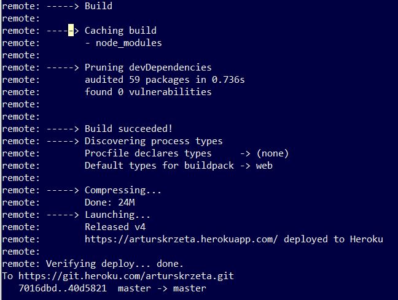
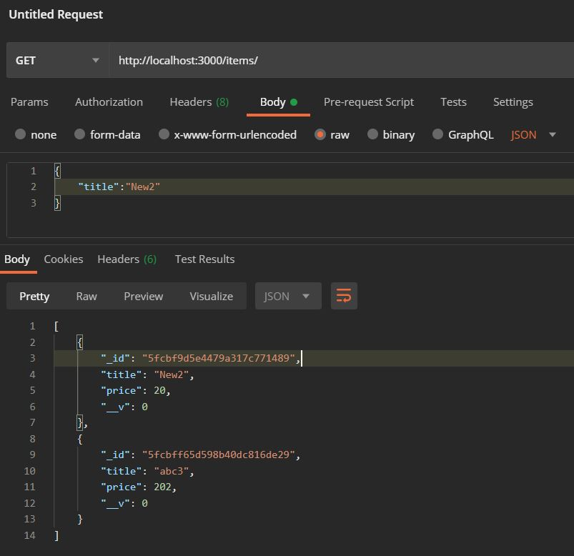

JS beyond a Browser
Intro
NodeJS creates conditions to use JavaScript outside of a browser.Simply put, it is an open-source runtime system for making server to run JS applications. In the project, I build and deploy the REST API application to Heroku which is the cloud platform in the PaaS model.
REST API:
- Web service APIs that adhere to the REST architectural constraints are called RESTful APIs.
- RESTful web service API allow requesting system to access or manipulate textual representation of web's resources.
- Requesting system has a set of uniform and predefined by API stateless operations.
- When we say that operation is stateless, it means next operation doesn't know about previous ones. In other words, operations on Web resources are independent.
- Requesting system can call available operations using HTTP requests: GET, HEAD, POST, PUT, PATCH, DELETE, CONNECT, OPTIONS and TRACE.
- RESTful Web service, makes web rosurces available under a specific Uniform Resource Identifier (URI) which is a string that provides a unique address where a resource can be found.
- Sending request to a resource's URI results with response in format of HTML, XML or JSON.
- In practice, when system or user is requesting, it sends chosen HTTP request under a specifed URI with defined parameters in form of JSON (when for example updating a resource).
Features
App includes following features:
Demo
Setting up nodejs server:
- We can run server by running using express extension:
const express = require('express')
const port = 3000
const app = express()
...
app.listen(port)
HTML templates:
- Html templates for being rendered to a browser are keptin in directory: './views'
- Html templates requires '.hbs' extension.
- We need to install hbs with npm.
- We let html template to be rendered for a specific endpoint, here '/home':
app.set('view engine', 'hbs')
app.get('/home', (req, res) => {
res.render('index')
})
HTTP request:
- Which request is going to be handled by an enpoint is specified as app method:
app.get('/home', (req, rest) => ... ) - Besides get, there are also post, delete, patch (like update).
Connecting with MongoDB Atlas database:
- At first we need to import mongoose:
const mongoose = require('mongoose')
- Then we can set up a connection:
mongoose.set('useUnifiedTopology', true)
mongoose.set('useNewUrlParser', true)
mongoose.connect(process.env.DB_CONNECTION, function(err, db) {
console.log('Connected to db.')
})
Deploying on Heroku:
- We can deploy our application into cloud platform.
- Heroku offers PaaS solutions or many programming languages.
- It requires Heroku CLI installation in order to upload the application.
- It requires also git installation to commit the application to Heroku repository.
- Here goes deployment procedure:
in code:
const port = process.env.PORT || 30000
in package.json:
"start": "node main.js"terminal:
cd project
heroku login
git init
heroku git:remote -a arturskrzeta
git config user.email ...
git config user.name ...
every time change in the project:
git add .
git commit -m "initial commit"
pushing changes to heroku repository:
git push heroku master
- App availabe at:
arturskrzeta.herokuapp.com - Logs available with:
heroku logs --tail - Push successful:

Postman
- I use Postman for resource's URIs testing.

Setup
App installation:
cd ./app_directory
npm init
npm install express
npm install hbs
npm install nodeman
npm install mongodb
npm install dotenv
npm install body-parser